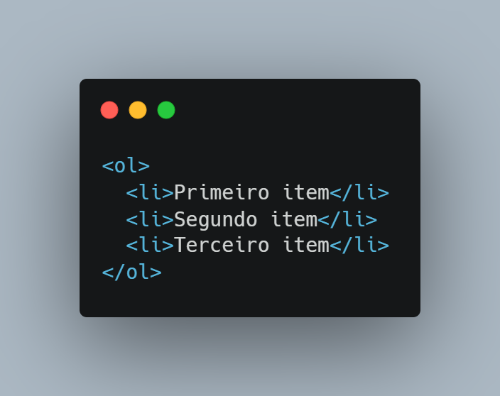
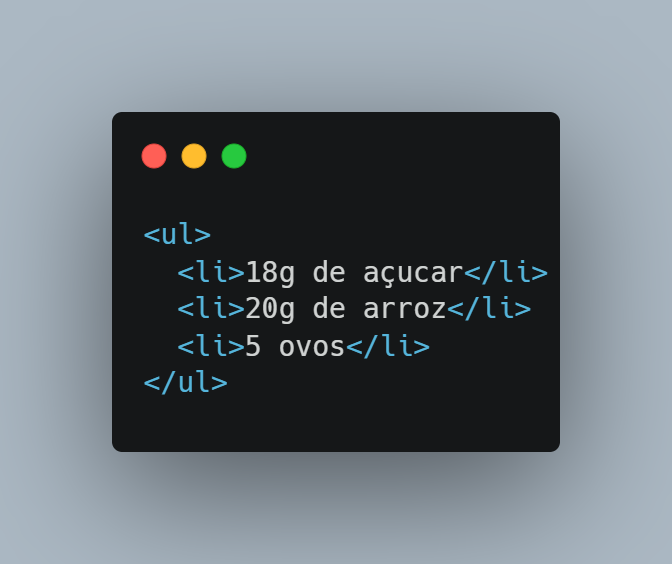
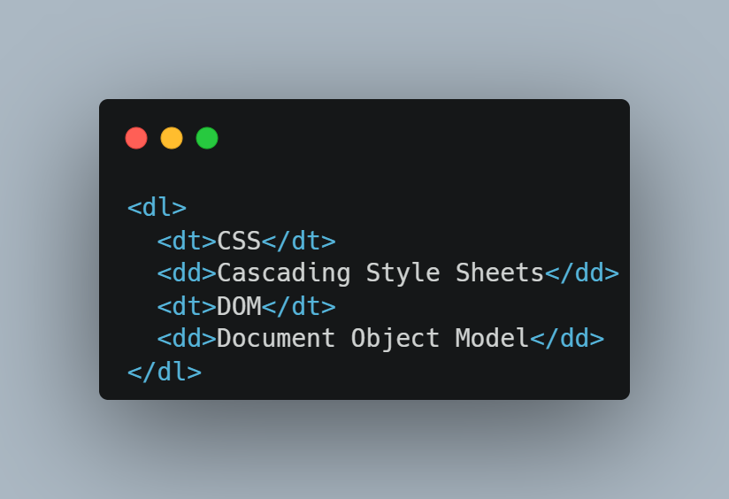
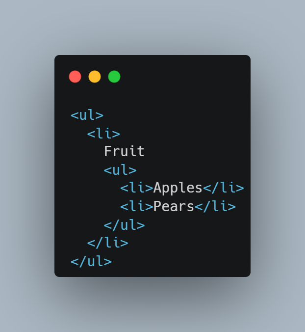
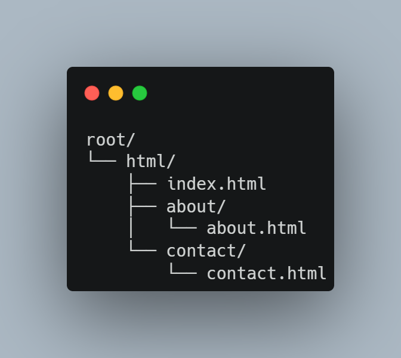
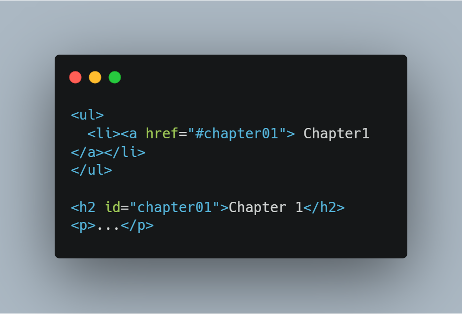
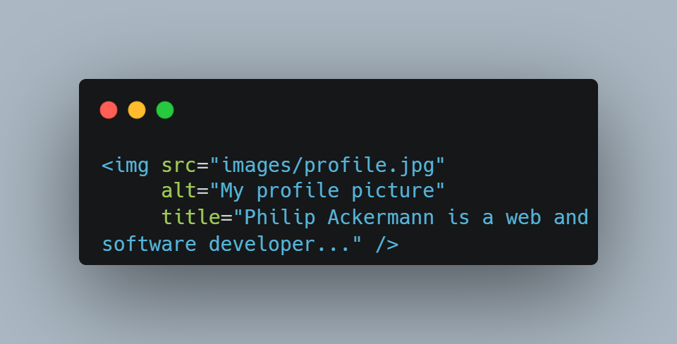
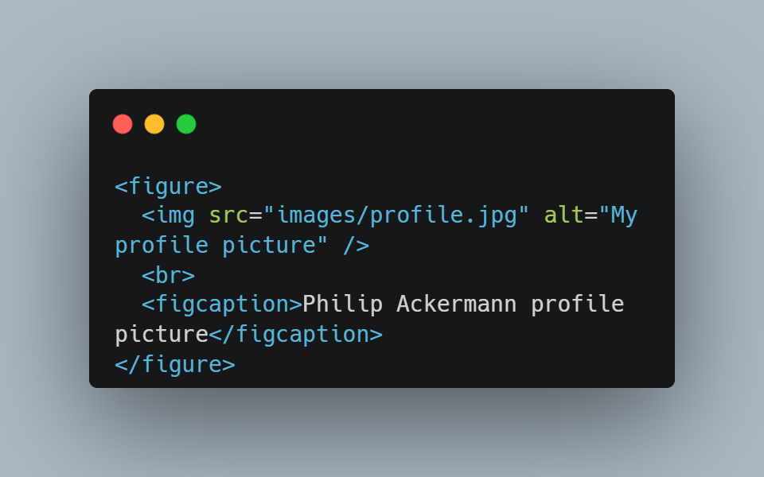
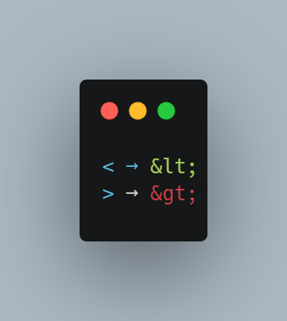

O HTML (Hypertext Markup Language) é uma das três linguagens essenciais para o desenvolvimento frontend,
ao lado do CSS (responsável pelo estilo visual) e do JavaScript (responsável pelo comportamento interativo).
Enquanto o CSS define a aparência e o JavaScript define a lógica, o HTML define a estrutura e o significado semântico
do conteúdo de uma página web.
2. Histórico e Versões do HTML
O HTML passou por diversas versões ao longo das décadas:
HTML (1992): Primeira versão, baseada em propostas de Tim
Berners-Lee desenvolvidas desde 1989 no CERN.
HTML 4.0 (1997): Versão relevante por marcar a chegada do CSS
como linguagem de estilo separada.
XHTML 1.0:Reformulação do HTML seguindo as regras mais
rígidas do XML, como exigir atributos em letras minúsculas e
sempre com valor definido.
HTML5 (2014): Versão mais moderna, que substituiu as
anteriores e introduziu novas funcionalidades, elementos
semânticos e diversas APIs web.
O padrão HTML é mantido pelo W3C (World Wide Web
Consortium), mas também pela WHATWG (Web Hypertext Application Technology Working Group),
que trata o HTML como um "living standard" — ou seja, um padrão em evolução contínua,
sem número de versão fixo. Hoje, as duas organizações colaboram juntas no desenvolvimento do padrão.
3. Estrutura Básica: Elementos e Atributos
3.1 Elementos HTML
Os elementos HTML são os blocos fundamentais de construção de uma página.
Cada elemento é composto por:
Uma tag de abertura(ex: < h1 >)
O conteúdo do elemento (texto ou outros elementos)
Uma tag de fechamento (ex: < /h1 >)
Alguns elementos são vazios — não podem conter texto ou elementos filhos. Eles usam uma notação especial
com barra antes do fechamento (ex: < br/ >).
3.2 Atributos HTML
Os atributos permitem passar informações adicionais a um elemento. Eles são escritos dentro da tag de abertura,
no formato nome="valor". Por exemplo, o atributo href define o endereço de um link no elemento < a >.
3.3 Estrutura de um Documento HTML
Um documento HTML básico é composto pelas seguintes partes:
<!DOCTYPE html> : Declara a versão do HTML utilizada (no caso do living standard, simplesmente html).
<html>: Envolve todo o conteúdo da página. Tudo entre esta tag e a tag de fechamento
será interpretado como código HTML.
<head>: Contém informações que não aparecem diretamente na janela principal do navegador,
como o título da página (<title>).
<title>:Título da página, exibido acima da barra de endereço do navegador.
<body>: Contém todo o conteúdo que deve ser exibido pelo navegador — textos, imagens, formulários, etc.
4. Elementos de Texto e Formatação
4.1 Títulos e Parágrafos
O HTML oferece seis níveis de títulos, representados por <h1> (maior) a <h6> (menor).
Para parágrafos de texto comum,
utiliza-se o elemento <p>, que o navegador exibe com espaçamento entre os parágrafos.
4.2 Marcação de Texto
Há vários elementos para marcar trechos de texto:
<b>: marca texto em negrito ("bold")
<strong>: marca texto que deve ser particularmente destacado (exibido em negrito por padrão)
<i>: marca texto em itálico ("italic")
<em>: marca texto que deve ser particularmente destacado (exibido em itálico por padrão)
<sup>: texto sobrescrito (ex: expoentes matemáticos ou notas de rodapé)
<sub>: texto subscrito (ex: fórmulas químicas)
<br />: texto subscrito (ex: fórmulas químicas)
4.3 Citações e Referências
<blockquote>: para citações longas
<q>: para citações curtas
<cite>: para referências à fonte de uma citação
<abbr>: para marcação de abreviações e acrônimos
<dfn>: para marcar definições de termos
5. Listas
O HTML oferece três tipos de listas:
5.1 Listas Ordenadas (<ol>)
Criam listas numeradas automaticamente. Cada item é definido com <li> ("list item").

5.2 Listas Não Ordenadas (<ul>)
Criam listas com marcadores (bullets). Também utilizam <li> para cada item.

5.3 Listas de Definição (<dl>)
Estruturadas em pares de termo e definição. Desde o HTML5, também chamadas de "description lists" (listas descritivas):
<dt>: o termo a ser definido ("definition term")
<dd>: a definição do termo ("definition description")

5.4 Listas Aninhadas
É possível inserir uma lista dentro de um <li>, criando sublistas. O navegador as exibe com
indentação maior e marcadores diferentes em relação à lista pai.

6. Links
Os links são criados com o elemento <a> e o atributo href. O texto entre as tags é o texto clicável,
exibido por padrão como texto sublinhado (geralmente em azul).
6.1 Links Externos
Apontam para outros sites, usando a URL completa como valor de href. O atributo target="_blank" faz
o link abrir em uma nova janela ou aba do navegador.
Nota:Se você especificar uma URL sem caminho, o navegador chama automaticamente a página inicial do site,
que por padrão é um arquivo chamado index.html no diretório raiz do servidor. Dica de acessibilidade: O texto do link deve ser o mais significativo possível, para que o usuário saiba para onde
o link leva antes de clicar. Textos genéricos como "Click here" ou "Here" devem ser evitados.
6.2 Links Relativos
Apontam para outras páginas do mesmo site, sem precisar incluir o domínio. A URL é resolvida a partir da pasta onde o
arquivo atual está localizado.
Exemplo de estrutura de diretórios:

De index.html para about.html: about/about.html
De about.html para index.html: ../index.html (dois pontos navegam para o diretório pai)
De about.html para contact.html: ../contact/contact.html
6.3 Links Internos (Âncoras)
Permitem navegar para uma seção específica dentro da mesma página. O destino deve ter um atributo id, e o link usa href="#id"
para apontar até ele.

Também é possível combinar um link externo com uma âncora: URL#id"
7. Imagens
Imagens são inseridas com o elemento vazio <img>, controlado exclusivamente por atributos:
src: caminho para o arquivo de imagem (geralmente uma URL relativa). Recomenda-se organizar
todas as imagens em um diretório específico (como /images).
alt: texto alternativo exibido quando a imagem não carrega, e lido por leitores de tela para usuários
com deficiência visual. Também ajuda os mecanismos de busca a entender o conteúdo da imagem.
title: texto de dica exibido ao passar o mouse sobre a imagem.

Desde o HTML5, é possível adicionar legendas às imagens com:
<figure>: elemento pai que agrupa a imagem e sua legenda
<figcaption>: define o texto da legenda

8. Tabelas
Tabelas são usadas para exibir dados estruturados em linhas e colunas. Os principais elementos são:
<table>: define a tabela
<tr>: define uma linha ("table row")
<td>: define uma célula de dados ("table data")
<th>: define uma célula de cabeçalho ("table heading"), exibida em negrito por padrão
Nota:Colunas não são definidas explicitamente — resultam da combinação de linhas e células.
8.1 Estrutura Semântica da Tabela
Para tabelas longas, podem ser usados:
<thead>: agrupa as linhas de cabeçalho
<tbody>: agrupa as linhas de dados
<tfoot>: agrupa as linhas de rodapé
A vantagem é que contribuem para a acessibilidade da tabela e permitem estilização específica via CSS.
8.2 Mesclagem de Células
colpsan: estende uma célula por várias colunas
rowspan: estende uma célula por várias linhas
9.formulários
Formulários são amplamente usados na web — desde campos de busca até cadastros, logins e pagamentos online.
9.1 Estrutura do Formulário
<form>: define o formulário. O atributo action define a URL para onde os dados serão enviados; o atributo
method define o método HTTP.
O elemento <input> é genérico e seu tipo é controlado pelo atributo type:
Valor de type
Finalidade
text
Campo de texto simples
password
Campo de senha (caracteres mascarados)
email
Campo de e-mail (com validação automática pelo navegador)
radio
Botão de opção (selecionar uma entre várias opções do mesmo grupo)
checkbox
Caixa de seleção (múltiplas opções)
submit
Botão de envio do formulário
9.3 Outros Elementos de Formulário
<select> com <option>: cria listas suspensas (dropdowns)
<textarea>: área de texto para entradas longas
<label>: associa um rótulo textual a um campo. Pode ser usado de duas formas:
Como elemento pai do <input>, com o texto do rótulo ao lado
Em outro lugar da página, estabelecendo a relação via atributo for apontando para o id do campo
9.4 Envio de Dados
Quando o formulário é enviado:
Os dados são enviados para a URL definida em action
O método HTTP é definido por method
Os dados são enviados como pares nome-valor, onde o nome é definido pelo atributo name de cada campo
O botão de envio é criado com <input type="submit">
10. Outros Conceitos Relevantes
10.1 Elementos de Bloco vs. Inline
Bloco: começam com uma nova linha quando exibidos no navegador
(ex: <h1> a <h6>, <p>, <ul>)
Inline: exibidos na mesma linha (ex: <a>, <b>, <em>,
<strong>, <img>)
10.2 Agrupamento
<div>: agrupa textos e elementos como bloco — usado para criar
componentes de UI personalizados
<span>: agrupa textos e elementos inline
10.3 Caracteres Especiais (Escape)
Caracteres reservados pelo HTML devem ser escritos com códigos especiais:

10.4 Atributos Especiais
<id>: identificador único de um elemento, usado para links âncora e CSS
<class>: associa o elemento a uma classe específica (para CSS)
10.5 Comentários
Comentários são ignorados pelo navegador: <!-- comentário -->
10.6 Metadados (<meta>)
Dentro do <head>, permitem definir informações sobre a página, como palavras-chave relacionadas ao conteúdo ou
informações sobre o autor. São particularmente relevantes para search engine optimization (SEO).
10.7 Elementos Estruturais do HTML5
<header>: área de cabeçalho da página
<footer>: área de rodapé
<nav>: área de navegação
<article>: artigos individuais dentro da página
<aside>: informações marginais
<section>: agrupamento de conteúdo relacionado
10.8 Inclusão de CSS e JavaScript
CSS pode ser incluído no <head> com <ink> (arquivo externo) ou <style> (código inline) —
detalhado no Capítulo 3
JavaScript é incluído com o elemento <script> — detalhado no Capítulo 4
10.9 Arquivos Multimídia
Além de imagens, é possível incluir arquivos de áudio e vídeo. Os formatos disponíveis e a forma de inclusão são
abordados no Capítulo 6.
11. Resumo dos Pontos-Chave
HTML é uma linguagem de marcação que permite definir a estrutura e a semântica de páginas web usando elementos
Elementos HTML consistem em uma tag de abertura e uma tag de fechamento
Informações adicionais podem ser passadas via atributos (nome="valor")
Alguns elementos podem conter outros elementos (filhos) e texto, mas elementos vazios não podem conter texto
ou outros elementos
Páginas web ou documentos HTML são documentos de texto comuns
Existem muitos elementos HTML diferentes. Os mais importantes incluem: títulos, parágrafos de texto, listas, links,
imagens, tabelas e formulários